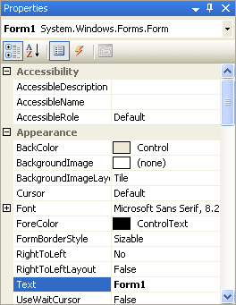
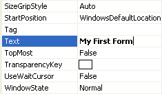

An Introduction to VB .NET Properties
You've probably noticed the area to the right of the design environment, the area with all the textboxes in a grid, the one that has those daunting names like "AccessibleDescription", "AccessibleName", "AccessibleRole". That's the Properties box.
Click anywhere on the form that is not a label or a textbox, somewhere on the form's grey areas. The form should have the little sizing handles now, indicating that the form is selected.
On the right of the design environment there should be the following Properties box:

If your Properties box says "Textbox1 Textbox" or "Label1 Label" then you haven't yet selected the Form. Click away from the textbox or label until the Properties box reads "Form1 Form"
What you are looking at is a list of the properties that a form has: Name , BackColor, Font, Image, Text, etc. Just to the right of these properties are the values for them. These values are the default values, and can be changed. We're going to change the value of the Text property.
First, you might want to display the list of Properties in a more accessible form. You can display the list properties alphabetically. To do that, click the Alphabetic icon at the top of the Properties box, as in the image below:
This will make the properties easier to find.
Before we change any in the Properties box, let's clear up what we mean by "Property".
No more reading these lessons online - get the eBook here!
What is a Property?
Those controls you added to the form (textboxes and labels), and the form itself, are called control objects. You can think of controls as things, something solid that you can pick up and move about. Controls (things) have properties. If your television were a control, it too would have properties: an On/Off button property, a colour property, a volume property, and a ... well, what other properties would your television have? Think about it.
The properties of your television will have values. The On/Off button would have just two values - On or Off. The volume property could have a range of values, from zero to ten, for example. If the value of the volume property was set to ten, the loudest value, then you'd probably have some very angry neighbours!
In VB.NET, you can change a property of a control from the Properties Box. (You can also change a property using code, which you'll do quite a lot.) If we go back to our Form object, and the properties and values it has, we can see how to change them using the Properties Box. We'll change only one of these values for now - the value of the Text property . So, do this:
- Locate the word "Text" in the Property box, as in the image below

"Text" is a Property of Form1. Don't be confused by the word "Form1" next to the word "Text". All this means is that the current value of the Text property is set to the word "Form1". This is the default.
To change this to something of your own, do this:
- Click inside the area next to "Text", and delete the word "Form1" by hitting the backspace key on your keyboard
- When "Form1" has been deleted, type the words "My First Form"

- Click back on the form itself (the one with the labels and textboxes), or hit the return key on your keyboard
- The words "My First Form" will appear as white text on a blue background at the top of the form
When you've correctly changed the Text property, your Form will then look like this one:
As you can see, your new text has gone at the top of the form, in white on the blue background.
So the Text Property of a form is for setting the caption you want to display
in the title bar at the top.
In the next part, we'll take a look at how to change the text property of labels and textboxes.